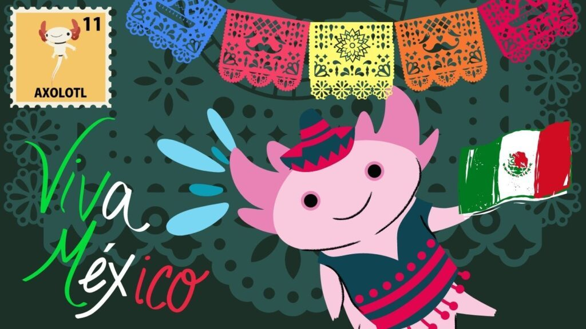

porque se deferia festejar?
Un evento histórico que marcó el inicio de la lucha por la independencia de México. El Grito de Independencia es uno de los eventos históricos más importantes de nuestro país, pues marca el inicio de la lucha por la independencia de México y se conmemora cada 15 de septiembre
como festejar el 15 de septiembre
- Inicia el festejo desde el momento en el que te vistes y si no tienes vestimenta tradicional mexicana, como camisas bordadas, guayaberas o vestidos de colores, puedes pintarte el rostro de verde, blanco y rojo.
- Bien dicen que la comida es una fiesta, así que elige tus platillos mexicanos favoritos y prepáralos sin complicarte la vida. Te dejamos algunas opciones de comida y bebidas mexicanas.
Tacos, sopes o gorditas con diferentes guisos como picadillo, carne asada, pollo, chicharrón en salsa
Mole y arroz
Pozole
Tamales de pollo, Puerco, rajas con queso y los de dulce con elote
Aguas frescas de horchata, Jamaica, limón y sandía
- ¿Quién dice que necesitas salir a la plaza para sentir el espíritu patriótico? Basta con poner un poco de música mexicana, despejar la sala y ponerte a bailar con los que habitan tu hogar; no importa si es con tu familia o sólo tus mascotas. Entre las canciones que no pueden faltar en tu playlist, están:
México lindo y querido, El son de la negra, El sinaloense, Guadalajara, y tus favoritas para disfrutar la fiesta.
- Finalmente, para honrar la tradición donde el cura Miguel Hidalgo pronunció las palabras que convocaron a la independencia en 1810, el 15 de septiembre a las 11:59 pm, puedes dar el grito para decir con toda la fuerza de tus pulmones “¡Viva México!”.
